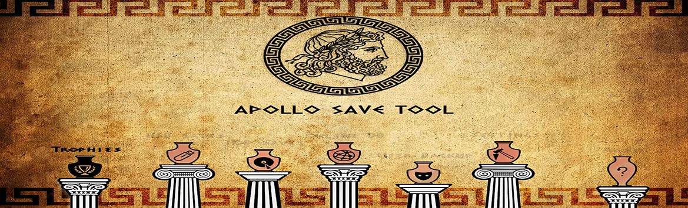
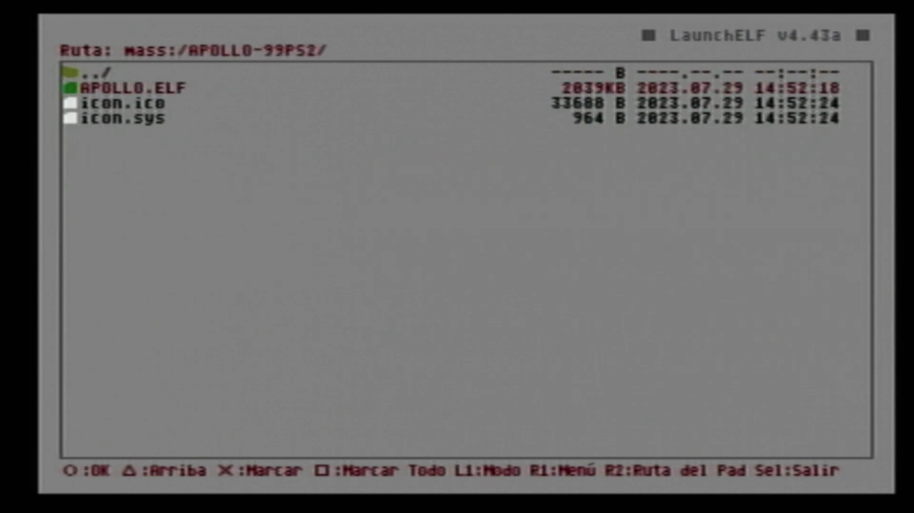
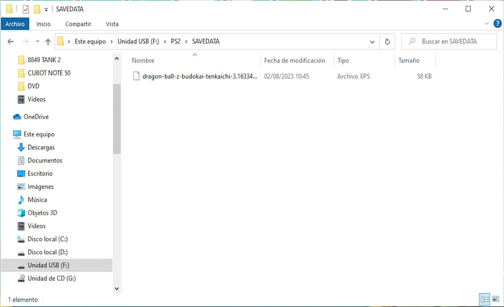
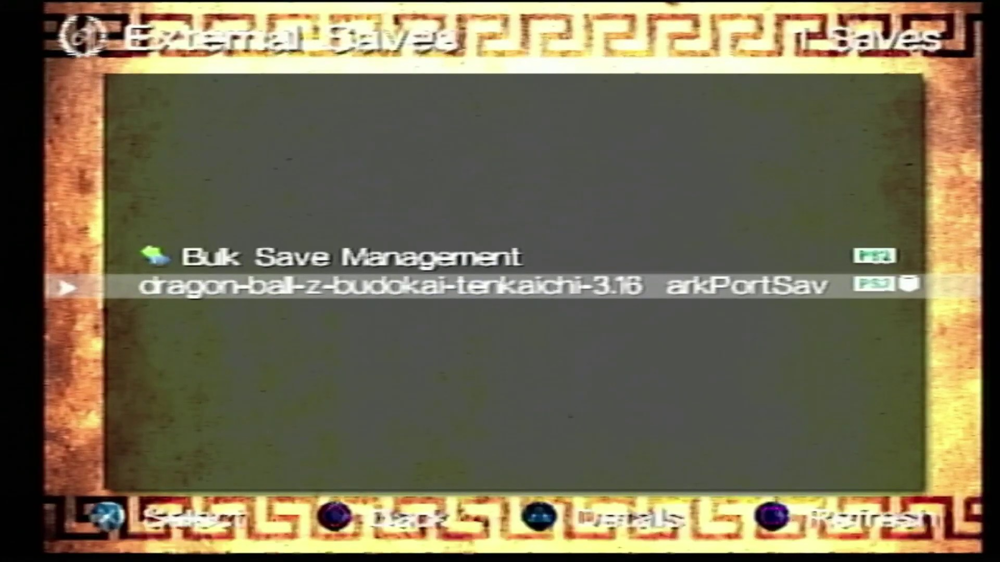
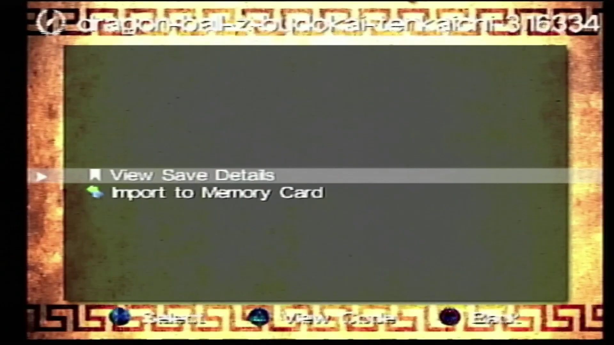
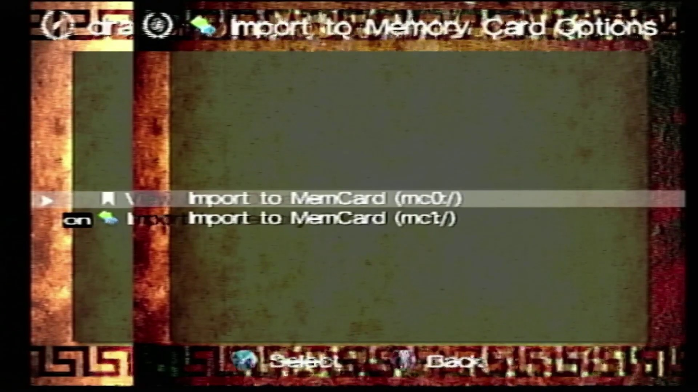

PS2 Apollo Save Tool
Apollo Save Tool es una aplicación para administrar archivos de partidas guardadas, trofeos y licencias en PlayStation 2.
Para esta Guia
Requisitos para este tutorial
- USB en formato FAT32
Programas para este Tutorial
Empezando este Tutorial
- Descargamos la última versión disponible de apollo-ps2 y la descomprimimos
- Copiamos la carpeta APOLLO-99PS2 a nuestro USB
- Una vez copiado nos vamos a nuestra PS2 y abrimos la aplicación launchELF
- Y buscamos la carpeta copia y el archivo APOLLO.ELF ruta
MASS:/APOLLO-99PS2/y lo abrimos

- Una vez dentro de la aplicación para pasarle alguna partida solo debemos saber el ID de nuestro juego para buscar el savedata sobre el mismo ID del juego
- Los savedata descargados los colocamos en la siguiente ruta del USB
PS2/SAVEDATA

- Después en el menú de la aplicación vamos a Setting y cambiamos la siguiente configuración External Saves Source por
mass:/para trabajar desde el USB - En Ext Saves podemos copiar nuestro savedata descargado abrimos el savedata 
- Una vez abierto seleccionamos Import to Memory Card 
- Después seleccionamos la memory card la izquierda corresponde a la (
mc0:/) o la derecha la (mc1:/)

- Y le damos a
 una vez termine nos queda probarla la partida nada mas
una vez termine nos queda probarla la partida nada mas
×